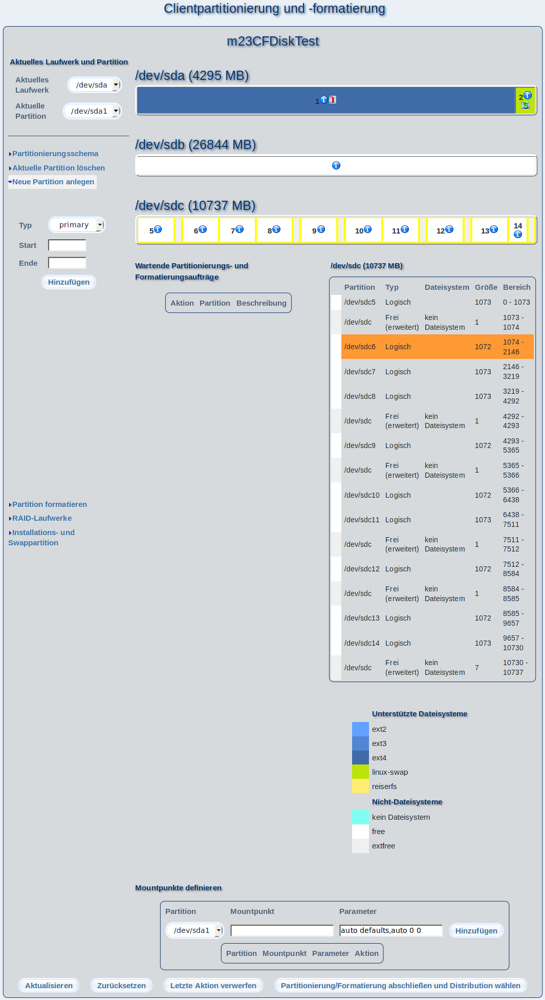

In diesem Dialog können Sie Ihren m23-Client partionieren und formatieren, sowie Software-RAIDs verwalten. Nachdem Sie Ihre Änderungen vorgenommen haben, klicken Sie auf "Partitionierung/Formatierung abschließen und Distribution wählen".

Überblick
Im linken Menü sehen Sie die Werkzeuge und Funktionen zum Bearbeiten von Festplatten und Partitionen. Bei aktiviertem JavaScript bewegen Sie die Maus im Menü über die gewünschte Funktion, um das Menü auszuklappen. Rechts daneben befindet sich die aktuelle Partitionierung und Formatierung aller Festplatten und RAIDs. Darunter (unter "Wartende Partitionierungs- und Formatierungsaufträge") sehen Sie die Aufgabenliste mit Partitionierungsanweisungen, die der m23-Client durchlaufen muß, um den derzeit dargestellten Zustand zu erreichen. Rechts daneben sehen Sie detaillierte Informationen über das Laufwerk, das sich unter dem Mauszeiger befindet (bei aktiviertem JavaScript bzw. bei deaktivierten die Informationen von allen Laufwerken). In der Legende unter Ünterstützte Dateisysteme" sehen Sie die Dateisystemtypen, die mit m23 angelegt und verwaltet werden können.
Unterabschnitte
root
2013-08-18